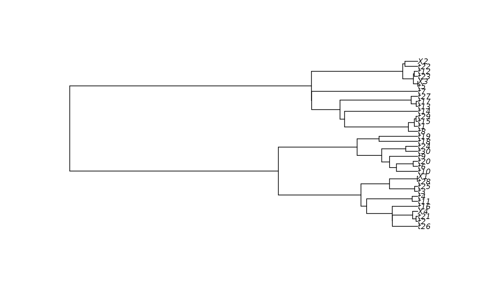
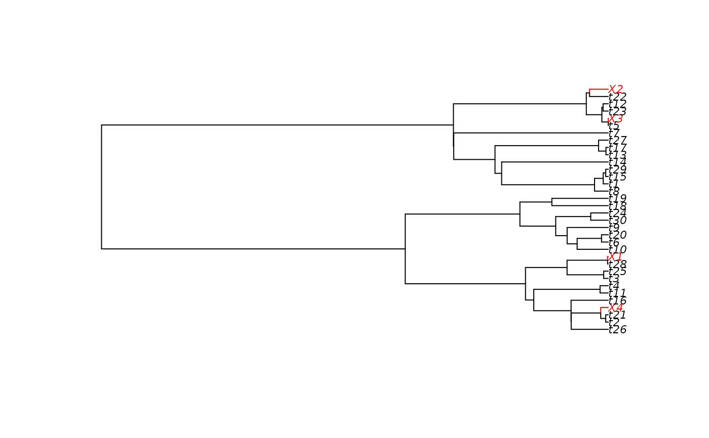
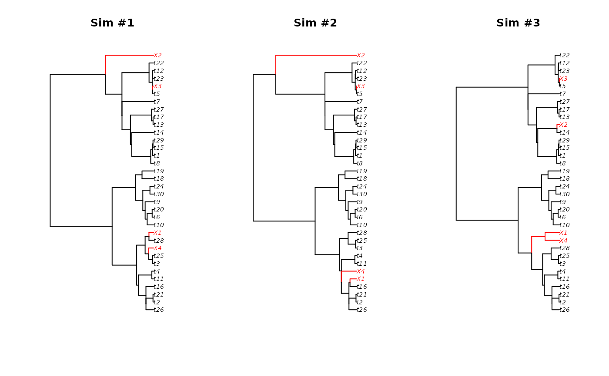
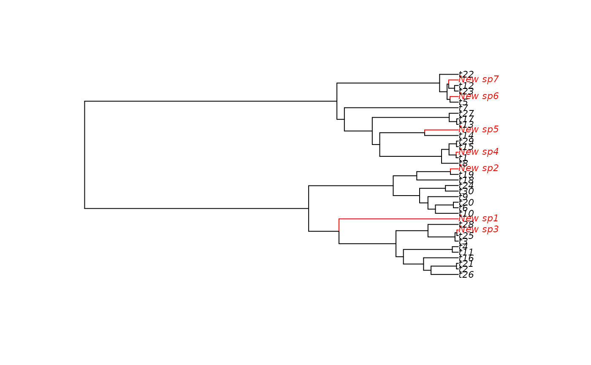

Graft missing taxa on a time-calibrated phylogeny
Source:R/graft_missing_taxa.R
graft_missing_taxa.RdThis function grafts missing taxa onto an ultrametric, time-calibrated backbone phylogeny.
The position of each taxon is constrained by its taxonomic assignment (the target clade, defined in Target_clade),
and optionally by taxonomic exclusions (the excluded subclades, defined in Excluded_subclades),
and/or exclusions based on species attributes (the allowed states, defined in allowed_states based on the simmap).
The divergence times of the grafted branches are either drawn uniformly along the branches (method = "uniform"),
or drawn from a birth-death model fitted on the target clade (method = "BD_clades", default).
The backbone is never modified: only new tips are added.
Usage
graft_missing_taxa(
phy,
missing_taxa_list,
method = "BD_clades",
min_tips = 5,
return_BD_model_summary = FALSE,
include_target_clade_stem = TRUE,
use_excluded_subclades = TRUE,
exclude_subclades_stem = TRUE,
total_richness_per_clades = NULL,
simmap = NULL,
allowed_states = NULL,
treat_states_as_ranges = FALSE,
return_simmap = TRUE,
min_valid_fraction = 0.1,
max_age_redraws = 1000,
seed = 1234,
nb_simulations = 1,
force_simulations = FALSE,
parallel = NULL,
save_temp = FALSE,
save_temp_every = NULL,
temp_file_path = NULL,
clean_temp_files = TRUE,
resume = FALSE,
ultrametric_tol = .Machine$double.eps^0.5,
verbose = TRUE
)Arguments
- phy
An object of class
"phylo". The backbone phylogeny on which taxa are grafted. It must be rooted, binary (no polytomies) and ultrametric (i.e., be time-calibrated). It can be the output of a previous grafting: the grafted tips then accumulate (see 'Successive graftings').- missing_taxa_list
A list with the information on the taxa to graft. Every item provided must be named after
$Taxon_name. Items:$Taxon_name: Character vector of the names of the taxa to graft. Names must be unique and absent fromphy$tip.label.$Target_clade: List (named after$Taxon_name) of character vectors. For each taxon, the tip labels defining its target clade, i.e., the clade where the taxon is known to belong (e.g., its genus). A pair of tips defines the clade as their MRCA node. A single tip defines the "clade" as the terminal branch of this tip. Clades, including the excluded subclades (see below), must be defined by tips: node IDs are not accepted (the function stops, and lists some of them). UsephylograftR::convert_nodes_to_tips()to convert node IDs into pairs of tips.$Target_clade_name: (Optional) Character vector (named after$Taxon_name) of the names of the target clades (NAif a clade has no name). Taxa sharing the same target clade must have the same name. The names are not used for the grafting, but, iftotal_richness_per_cladesis provided, they are checked against its$Target_clade_name(a clade must have the same name in both objects).$include_target_clade_stem: (Optional) Logical vector (named after$Taxon_name). For each taxon, whether the stem branch of its target clade is available for grafting. It overrides the global argumentinclude_target_clade_stemfor this taxon.NAvalues use the global argument. WithNULL(default, or no item), the global argument applies to all taxa. Ignored for single-tip target clades (their terminal branch is their only branch, so the stem is always used; a warning lists the taxa withFALSE) and for target clades that are the whole tree.$Excluded_subclades: (Optional) List (named after$Taxon_name) of lists of character vectors. For each taxon, the excluded subclades of its target clade where the taxon is known not to belong. Each subclade is defined by a pair of tips (or a single tip, which excludes its terminal branch, seeexclude_subclades_stem). UseNULLfor taxa with no excluded subclades.$exclude_subclades_stem: (Optional) List (named after$Taxon_name) of logical vectors. For each taxon, whether the stem of each of its excluded subclades is also excluded, with one value per subclade of$Excluded_subclades(a single value is used for all the subclades of the taxon;NULLusesexclude_subclades_stem). It overrides the global argumentexclude_subclades_stemfor these subclades.NAvalues useexclude_subclades_stem. A logical vector with one value per taxon is also accepted (each value is used for all the excluded subclades of the taxon). For example,Excluded_subclades = list(X1 = list(c("t1", "t2"), "t7"), X2 = NULL)withexclude_subclades_stem = list(X1 = c(FALSE, TRUE), X2 = NULL). The excluded subclades of a taxon can also be named (e.g.,list(X1 = list(grp_A = c("t1", "t2"), grp_B = "t7"))): these optional names are used in messages, and must match the names of the values ofexclude_subclades_stemof the taxon if both are named.$allowed_states: (Optional) List (named after$Taxon_name) of character vectors. For each taxon, the states of thesimmapin which it can be grafted. It overrides the global argumentallowed_statesfor this taxon.NULLorNAuse the global argument. Only used with asimmap. For example,allowed_states = list(X1 = c("blue", "green"), X2 = NULL). With the maps of several traits, each element is a list with the states of each trait (NULL: no taxon-level value for the trait), e.g.,list(X1 = list(c("blue", "green"), "high"), X2 = list(NULL, "low"))(see 'Several traits' in Details section).
- method
Character string. Method used to draw the divergence times and the branches used for grafting. Must be one of
"uniform"or"BD_clades"(default). See Details.- min_tips
Integer. Only used for
method = "BD_clades". Minimum number of tips of the clade used to fit the birth-death model. If the target clade has fewer tips, the smallest enclosing clade with at leastmin_tipstips is used instead. Must be at least 3. Default is5.- return_BD_model_summary
Logical. Only used for
method = "BD_clades". Whether to report the birth-death models fitted during the grafting. IfTRUE, each grafted phylogeny has the attribute"BD_model_summary": a data.frame with one row per model (i.e., per target clade), summarizing diversification rates and sampling fraction. It can be extracted a posteriori withphylograftR::extract_BD_model_summary(). Default isFALSE.- include_target_clade_stem
Logical. Whether the stem branch of target clades is available for grafting. This is the default for all taxa: taxa with a value in
missing_taxa_list$include_target_clade_stemuse this specific instead. IfTRUE, a taxon can be grafted on the stem branch, and becomes sister to the target clade. Taxa already grafted on the stem can receive further grafts (see 'stem region' in Details section). Ignored for single-tip target clades as their terminal branch is their only branch, and is therefore always available for grafting. Ignored if the target clade is the whole tree: it has no stem. A warning is issued if the stem is requested for such a taxon. Default isTRUE.- use_excluded_subclades
Logical. Whether to avoid grafting within the excluded subclades provided in
missing_taxa_list$Excluded_subclades. Default isTRUE.- exclude_subclades_stem
Logical. Whether the stem of the excluded subclades is also excluded. This is the default for all the excluded subclades: those with a value in
missing_taxa_list$exclude_subclades_stemuse this specific value instead. IfTRUE, a taxon cannot be grafted on the stem of an excluded subclade (it cannot be sister to it): the subclade is excluded entirely, crown and stem. IfFALSE, only the branches within the subclade are excluded, and the taxon can be sister to it. For a single-tip excluded subclade, the terminal branch is the only branch of the tip, and it is its stem: the tip excludes nothing ifFALSE(a warning lists these cases). Only used ifuse_excluded_subclades = TRUE. Default isTRUE.- total_richness_per_clades
(Optional) List with the total number of species of the clades, to account for species that are neither in the backbone nor in
missing_taxa_list(unsampled species). Items:$Target_clade: List of character vectors of tips, defining clades as inmissing_taxa_list$Target_clade. Node IDs are not accepted: convert them withphylograftR::convert_nodes_to_tips()in the same call asmissing_taxa_list, so the tips of the clades match between both objects. The easiest way to obtain this list is to build it from a table of clades withphylograftR::build_total_richness_per_clades()orphylograftR::import_total_richness_per_clades(): the clades can be written with names, tips or node IDs, they are matched with the clades ofmissing_taxa_list, and the richness is checked against all the taxa to graft. It must cover all the unique target clades ofmissing_taxa_list. It can include other clades, e.g., enclosing clades.$Target_clade_name: (Optional) Character vector of the names of the clades, same length as$Target_clade(NAif a clade has no name). The names must be unique. Ifmissing_taxa_list$Target_clade_nameis provided, a clade must have the same name in both objects (the function stops otherwise). They are not used for the grafting, but they are reported byphylograftR::extract_sampling_info().$total_richness: Vector of positive integers, same length as$Target_clade. Total number of species of each clade, i.e., backbone species, missing species nested within the clade, and unsampled species. UseNAif unknown: the unsampled species are then assumed to be those of the clades with an informed total richness nested within the clade (none if there are no such clades).
With
NULL(default), no unsampled species are accounted for.If the list is provided with only
NAin$total_richness, no unsampled species are assumed in any clade (total_richness= backbone + missing species): the fits are identical to those withNULL.To obtain the resulting richness and the sampling fraction of the clades in each grafted phylogeny, use
phylograftR::extract_sampling_info()on the output, with the sametotal_richness_per_clades.See 'Sampling fraction and unsampled species' in Details section.
- simmap
(Optional) A stochastic character map of the backbone, of class
"simmap"(e.g., fromphytools::make.simmap()orphytools::sim.history()), or a set of maps of the same trait, of class"multiSimmap"(e.g., fromphytools::make.simmap(nsim = 10)), used as alternative hypotheses of the evolution of a species attribute (e.g., a trait or a range) with discrete states along the branches ofphy.Alternatively, you can provide a list of
"simmap"and/or"multiSimmap"objects, one per trait, that contains the maps of several traits used together as constraints. All maps must have the same tips, topology and branch lengths asphy. With asimmap, missing taxa can only be grafted on the parts of the branches that are in their allowed states (seeallowed_states). Each grafted taxa inherits the state(s) of the point of the branch piece where it is grafted.See 'Species attributes', 'Multiple stochastic maps' and 'Several traits' in Details section. Default is
NULL(no restriction for grafting based on states).- allowed_states
Character vector. The states of
simmapin which grafting is allowed. This is the default for all taxa: taxa with a value inmissing_taxa_list$allowed_statesuse this specific value instead. States are matched exactly with the states of thesimmap, unlesstreat_states_as_ranges = TRUE. Taxa with no allowed states (neither a global nor a taxon-level value) can be grafted in all the states of thesimmap. The function stops if some states are not in thesimmap, or ifallowed_statesis provided without asimmap. Withtreat_states_as_ranges = TRUE, a range that is not a state of thesimmapis accepted if it is contained in some of them (e.g.,"A"can be allowed if"AB"is found on thesimmap).With the maps of several traits (a list in
simmap), you must provide a list with one element per trait, in the order of the traits or named after them. In each element, the states allowed for each trait are named, withNULLfor no restriction on a trait, e.g.,list(c("blue", "green"), NULL, "high")(see 'Several traits' in Details section). Default isNULL(all states allowed).- treat_states_as_ranges
Logical. Only used with a
simmap. Whether the states of thesimmapare biogeographic ranges to be treated as sets of areas, rather than as unrelated states. Ranges must be coded as inBioGeoBEARS: one capital letter per area, and the letters of a multi-area range in alphabetical order (e.g.,"A","AB","ABC"). IfTRUE, an allowed range enables grafting on branch pieces in any range that contains it:"A"can be grafted on"A","AB"and"ABC", whereas"AB"can be grafted on"AB"and"ABC"but not"A".If stochastic maps of several traits are provided (a list in
simmap), you must provide a logical vector with one value per trait, with at most oneTRUEto define the trait treated as biogeographic ranges, the other traits being matched exactly. The vector is positional (e.g.,c(FALSE, TRUE, FALSE): the second trait is the range trait) or named after the traits, in any order (e.g.,c(biogeo = TRUE, color = FALSE, elevation = FALSE)). A singleFALSEis accepted with several traits (no range trait), but a singleTRUEstops.See 'Biogeographic ranges as states' and 'Several traits' in Details section. Default is
FALSE(states are matched exactly).- return_simmap
Logical. Only used with a
simmap, and silently ignored without it. Whether to add the updatedsimmapto the output, in$simmap(see 'Value'). Default isTRUE.- min_valid_fraction
Numeric between 0 and 1. Only used with a
simmap. Threshold below which a warning lists the taxa for inspection, as their grafting positions are concentrated on a small part of their target clade. The fraction is computed on the backbone, before grafting:With
method = "uniform", it is the fraction of the total length of the available branches of the taxon (its target clade, minus the excluded subclades) that is in its allowed states.With
method = "BD_clades", it is the fraction of the time window of the divergence times of the taxon (from the present to the stem age of its target clade, or to its crown age if the stem is not available) where at least one available branch is in an allowed state. Default is0.1.
- max_age_redraws
Integer. Only used with
method = "BD_clades". Maximum number of times the divergence ages of a group of taxa (same target clade, same stem availability and, with asimmap, same allowed states) can be redrawn, when some of the ages drawn cannot be used because no available branch (in an allowed state with asimmap) crosses them. The function stops with an informative message if this limit is reached. See 'Methods' and 'Species attributes' in Details section. Default is1000.- seed
Integer. Seed used for reproducibility. The seed only applies within the function: the state of the random number generator of the R session is restored on exit. Set to
NULLto use the random number generator of the session. Default is1234. With several simulations, it is the master seed: the first simulation usesseed, and the seeds of the other simulations are derived from it (see 'Multiple simulations').- nb_simulations
Integer. Number of simulations, i.e., of grafted phylogenies to produce in the same run, from the same backbone and the same
missing_taxa_list. The grafting is stochastic, so ideally downstream analyses should be run on a set of grafted phylogenies rather than on a single one. Default is1. See the section 'Multiple simulations' for the output, the seeds and the failures.- force_simulations
Logical. Whether to try new seeds until
nb_simulationsgrafted phylogenies are obtained, up to10 * nb_simulationsattempts (see 'Multiple simulations' in Details section). IfFALSE, the simulations that fail are skipped. Default isFALSE.- parallel
Logical or
NULL. Whether to run the simulations in parallel, with the packagesfutureandfuture.apply(they must be installed separately from phylograftR). Default isNULL: the simulations are run in parallel if the user set afutureplan with several workers beforehand (e.g.,future::plan(future::multisession, workers = 4)), and sequentially otherwise.FALSEforces a sequential run, even if a plan is set.TRUEexecute thefutureplan, but stops with an informative error if the packages are not installed or no plan is set. See 'Parallel computation' in Details section for recommendations on whether parallelization is useful in your case.- save_temp
Logical. Whether to save the grafted phylogenies during the process, to recover from a crash or an interruption of long runs (see 'Temporary saves and resuming' in the Details section). Each phylogeny (one per simulation and per stochastic map) has its own temporary file. Its progress is saved every
save_temp_everytaxa or groups of taxa (missing clades ingraft_missing_clades()), if notNULL, and the phylogeny is always saved once fully grafted. Default isFALSE.- save_temp_every
Integer or
NULL. Frequency of the saves of the progress, in number of taxa formethod = "uniform", and groups of taxa formethod = "BD_clades"(the taxa grafted together because they share the same target clade, availability of its stem and allowed states). Only used ifsave_temp = TRUE. Default isNULL: save each phylogeny only once fully grafted.- temp_file_path
Character string. Path of the
.rdsfile used for the temporary saves. It must end with.rdsand its directory must exist and be writable. Default isNULL, which saves in"temp_phy_from_grafting.rds"in the working directory. With several simulations and/or several stochastic maps, the path is a template: the suffixes"_map_<name>"(several maps;"map_"is not repeated if the name of the map already starts with it, e.g.,"temp_map_1.rds"for a map named"map_1") and"_sim_<k>"(several simulations) are added before".rds", in this order (e.g.,"temp_map_A_sim_2.rds"). See 'Temporary saves and resuming' in the Details section.- clean_temp_files
Logical. Whether to delete all the temporary files of the run once it is completed without stopping/crashing. Only used if
save_temp = TRUE. If the run crashes or is interrupted, nothing is deleted so it can be resumed. UseFALSEto keep the files. Default isTRUE.- resume
Logical. Whether to resume an interrupted run from its temporary files, which must come from a run with the exact same arguments (see 'Temporary saves and resuming'). Needs
save_temp = TRUE. Default isFALSE.- ultrametric_tol
Numeric. Tolerance used by
ape::is.ultrametric()for the ultrametricity checks of the backbone and of the final phylogeny. Default is.Machine$double.eps^0.5.- verbose
Logical. Whether to display progress. Messages print every 100 taxa for
method = "uniform", and every 10 target clades formethod = "BD_clades". Default isTRUE.
Value
The function returns an object of class "phylo": the backbone phylogeny with the grafted taxa added as new tips.
Backbone branch lengths are untouched, and the grafted phylogeny is ultrametric.
In addition to the standard elements of a "phylo" object, the phylogeny has the following elements:
grafted_tipsNamed logical vector with one value per tip, in the order of$tip.label.TRUEfor grafted tips (including the tips grafted by a previous grafting ifphywas already grafted). Names are the tip labels.grafted_edgesNamed logical vector with one value per branch, in the order of the rows of$edge.TRUEfor grafted branches, i.e., branches with only grafted taxa below them. Names are the IDs of the tipward nodes of the branches ($edge[, 2]). Use them to color the phylogeny on plots (see examples).
These elements are not updated by functions that modify the phylogeny (e.g., ape::drop.tip(), which removes tips but keeps the other elements as they are,
and ape::write.tree(), which removes them). Use phylograftR::identify_grafted() to recompute grafted_tips and grafted_edges on a manipulated phylogeny.
Optional elements can be added to the output based on what optional argument was provided:
"BD_model_summary"(attribute). Only ifreturn_BD_model_summary = TRUE. Data.frame with one row per birth-death model fitted (one per target clade), summarizing information about the clade used for model fitting, diversification rates, and sampling fraction. It can be extracted a posteriori withphylograftR::extract_BD_model_summary().simmapOnly if asimmapis provided andreturn_simmap = TRUE. The updated stochastic character map of the grafted phylogeny (class"simmap"): the pieces of the branches of the backbone keep their states (cut where taxa were grafted), and the grafted branch is entirely in the state of the point where it was grafted. Withtreat_states_as_ranges = TRUE, the grafted branch is entirely in the range it inherited (see 'Biogeographic ranges as states' in Details section). This element can be plotted as anysimmap, e.g.,plot(grafted_phy$simmap), or used to extract the states of the tips withphytools::getStates(grafted_phy$simmap, type = "tips"). It has the same exact topology and branch lengths as the grafted phylogeny. With the maps of several traits,$simmapis a list of such simmaps, one per trait, named after the traits (see 'Several traits' in Details section).
With nb_simulations > 1, the function returns an object of class "multiPhylo" with one grafted phylogeny per simulation, named "sim_1", "sim_2", ...
Each phylogeny has the elements described above (including $simmap if a simmap was provided and return_simmap = TRUE).
The "multiPhylo" object has the attributes "seeds" (named vector of the seeds of the phylogenies, to reproduce each of them alone with nb_simulations = 1;
NULL if seed = NULL) and "failed" (data.frame with the seed and the reason of the simulations that failed, 0 row if none).
With multiple stochastic maps (i.e., a "multiSimmap") provided as simmap, the function returns a list with one element per map (named after the maps):
a phylogeny if nb_simulations = 1, a "multiPhylo" otherwise (see 'Multiple stochastic maps').
The list has the attribute "failed_maps" (data.frame with the map and the reason of the maps without any simulation, dropped from the output).
The phylogenies have the attributes "seed" (their seed, unless seed = NULL) and, with several maps, "map", to ensure reproducibility of each simulation.
Details
Stop conditions
The function stops, before any grafting, if the backbone is not ultrametric, or is not binary (i.e., all nodes have only two descendant lineages).
It also stops if some taxa have no branch available for grafting. The taxa concerned are listed in the error message,
so the constraints (include_target_clade_stem, Excluded_subclades, exclude_subclades_stem or, with a simmap, the allowed states) can be adjusted.
With method = "BD_clades", the function can also stop during grafting if no usable divergence age is found after max_age_redraws redraws (see 'Methods').
Target clades, stem regions and excluded subclades
Each taxon is grafted within its target clade. The branches available for grafting are all the branches of the target clade
(descending from its MRCA node), plus its stem region if the stem is available for this taxon (missing_taxa_list$include_target_clade_stem of the taxon if provided, otherwise the global argument include_target_clade_stem).
Grafting on the stem branch places the taxon sister to the target clade.
Taxa of the same target clade can therefore differ in their stem availability: the clade is the same (same MRCA node, same richness information),
but the branches and the time window available for the divergence times of these taxa differ.
The stem region is not restricted to the original stem branch. A taxon grafted on the stem splits it in two pieces, and becomes itself part of the stem region:
later taxa can be grafted on both pieces of the stem, and on the terminal branch of the earlier taxon (the two taxa are then sister, and together sister to the target clade).
More generally, the stem region includes all the branches of the 'missing-only subtrees' hanging from the stem, i.e., subtrees containing only taxa of missing_taxa_list$Taxon_name,
whatever their own target clade. This mirrors what happens within the crown group, where missing taxa can already be grafted on the branches of other missing taxa.
Branches inside excluded subclades are removed from the pool of available branches. By default (exclude_subclades_stem = TRUE),
the stem region of the excluded subclades is removed as well: the taxon can be neither nested within the excluded subclade,
nor sister to it (nor sister to the missing taxa already grafted on its stem).
This is the only way to exclude a single tip, as its terminal branch is its only branch.
With exclude_subclades_stem = FALSE (globally, or for a given subclade in missing_taxa_list$exclude_subclades_stem), the stem of the excluded subclade stays available:
the taxon can be sister to the excluded subclade, but never nested within it. A single tip then excludes nothing.
The setting is specific to each excluded subclade, so a taxon can have excluded subclades with different settings.
Excluded subclades are expected to be nested within their target clade. The function checks their position before grafting:
a warning is issued if an excluded subclade is outside the target clade (the exclusion then has no effect).
The function stops if an excluded subclade contains the whole target clade, or is identical to it: no branch (or only the stem branch) would be left for grafting.
To graft taxa specifically on the stem branch of a clade or of a single tip, use phylograftR::graft_missing_clades() instead.
A warning lists the single-tip excluded subclades with a stem that is not excluded, as they exclude nothing.
Methods
"uniform": Taxa are grafted one by one, per target clade from the smallest to the largest, so nested clades are processed first (see below). Within each target clade, taxa are grafted in random order. The branch used for grafting is drawn among the available branches with probabilities proportional to branch lengths, and the position on the branch is drawn from a uniform distribution. This is fast, but does not account for diversification dynamics. Note that under a birth-death process, the probability of a side lineage splitting off a branch at age t follows the exponential function e^(-rt), with r the net diversification rate (speciation minus extinction). A uniform draw implicitly assumes a flat density (r = 0), and gives too much weight to old divergence times compared to the expectation from a birth-death process."BD_clades": Taxa are grafted per target clade, from the smallest to the largest, so nested clades are processed first (see below). For each target clade, a birth-death model is fitted withphytools::fit.bd()on the clade, or on the smallest enclosing clade with at leastmin_tipstips. The sampling fraction accounts for the number of missing taxa provided for grafting in this clade. The divergence times of all taxa missing in the target clade are then jointly drawn withTreeSim::corsim(), between the present and the stem age of the clade (or its crown age if the stem is not available for these taxa). Taxa are grafted from the oldest to the youngest divergence time following this procedure:A taxon is grafted at its age if an available branch in an allowed state crosses this age in the current tree.
The ages for which no such valid branch piece exists are discarded.
The ages of the taxa left are drawn again jointly, and grafted or discarded in the same way. This is repeated until all the taxa of the group are grafted, up to
max_age_redrawstimes. Taxa of the same target clade with different stem availability (or, with asimmap, different allowed states) are drawn in separate groups, and the birth-death model is fitted only once per target clade."BD_clades"is the recommended grafting method, but it can be time consuming for large phylogenies.
With both methods, nested clades are processed first, so the taxa of a larger clade are grafted on a tree that already
includes the taxa of the clades nested within it, and can be grafted on their branches.
For taxa of the same clade, those without access to the stem come first.
For "BD_clades", it also ensures that the divergence times of nested clades are accounted for when drawing the divergence times of the larger clade.
Taxa of the same target clade are grafted in random order, so they are exchangeable.
Enclosing clades
Under the "BD_clades" method, when a target clade contains fewer tips than min_tips, an alternative higher clade is selected to fit the birth-death model.
This 'enclosing clade' is identified by walking rootward the tree node by node, starting from the target clade, until a clade meets the min_tips condition.
This ensures that the diversification dynamics modeled are based on enough tips to be relevant, while being closely associated with the target clade.
Sampling fraction and unsampled species
Under method = "BD_clades", the birth-death model of a clade is fitted with the sampling fraction
n_present / (n_present + n_pending + n_unsampled), with n_present the tips of the fitted clade in the current tree (backbone tips and taxa already grafted),
n_pending the taxa of missing_taxa_list still to graft in this clade, and n_unsampled the unsampled species derived from total_richness_per_clades.
Taxa grafted in nested clades processed earlier are already in the tree, so they are not counted as missing anymore.
Unsampled species are only used to fit the rates: they are not grafted, and do not compete with the grafted taxa for the branches.
For a clade with a total_richness value provided: nb_unsampled = total_richness - nb_backbone - nb_missing, with nb_missing the number of taxa to graft
whose target clade is this clade or is nested within it. For a clade with no total_richness value (NA, or enclosing a target clade without being listed),
nb_unsampled is the sum over the largest clades nested within it with a total_richness value provided.
As such, the unsampled species of nested clades are summed across disjoint clades but never counted twice within nested clades.
If total_richness_per_clades = NULL, nb_unsampled = 0: the clades have no unsampled species (the same as providing only NA in $total_richness).
The species actually present in each listed clade, and the resulting sampling fractions for downstream analyses, may differ among grafted phylogenies,
as a taxon can be grafted on the stem of its target clade, or within a clade nested in it, which changes the richness of these clades.
Use phylograftR::extract_sampling_info() to extract them a posteriori.
The function stops, before any grafting, if total_richness_per_clades does not cover all the target clades, if a total_richness provided is lower than
the number of backbone species plus species to graft of the clade, or if a clade has fewer unsampled species than the sum of the clades with
a total_richness provided nested within it.
With method = "uniform", no diversification model is used: total_richness_per_clades is not used during the grafting (a warning is issued).
It is only checked, and can be provided later to phylograftR::extract_sampling_info().
Species attributes: allowed states of a simmap
A simmap describes the states of a discrete attribute (e.g., a trait or a range) along the branches of the backbone: each branch is cut in pieces, each piece being in one state.
With a simmap, each taxon can only be grafted on the pieces of the available branches that are in its allowed states
(missing_taxa_list$allowed_states of the taxon if provided, otherwise the global argument allowed_states).
This combines with the other constraints: the available branches are those of the target clade, minus the excluded subclades, restricted to the allowed states.
If all states are allowed (all states listed in allowed_states, or no allowed states at all), grafting is not restricted by the states,
and constraints are only based on target clades and excluded subclades.
A grafted taxon is assumed to be in the state of the point of the backbone where it was grafted, along its whole branch, and so are the taxa grafted on its branch later. Taxa grafted later can therefore be grafted on the branches of taxa grafted earlier, if their state is allowed.
The states are updated alongside the phylogeny, and the updated simmap is returned in $simmap if return_simmap = TRUE.
A simmap can thus be provided with allowed_states = NULL, only to get the states of the grafted taxa and branches:
grafting is then not restricted by the states and gives the same result as without simmap (for the same seed).
With method = "uniform", the draw is uniform over the available pieces (i.e., portion of branches in the allowed states), weighted by their length:
every time point in an allowed state has the same chance to be selected.
With method = "BD_clades", the divergence ages of the taxa of a group (same target clade, same stem availability and same allowed states) are drawn jointly
with TreeSim::corsim(), as without a simmap: the diversification model is not modified by the states.
The same grafting procedure, described above without a simmap, is then used except that
an age can only be used if an available branch in an allowed state crosses it (without a simmap, if an available branch crosses it).
The ages are used from the oldest to the youngest, each for one taxon of the group.
Cautions for interpretation: risks of circularity.
Constraining the grafting by a trait that will then be analyzed (e.g., the association of the trait with diversification) may bias the results towards the constraint. The grafted taxa are placed only where the trait allows it, so they are in the allowed states by construction. This can create or inflate an association between the trait and the diversification dynamics, affect the rates of transitions between states, or inflate the phylogenetic signal of the trait. It also reduces the uncertainty about the state of the grafted lineages since they always inherit a unique state. It is recommended to acknowledge these potential biases when interpreting such analyses.
To limit the risk of circularity, multiple approaches are possible:
constrain the grafting by traits that are not the object of downstream analysis;
compare the results with and without the constraint (or on the backbone only);
keep the constraint as loose as the information allows (e.g., allowed states that include neighboring states);
use several maps and simulations to propagate the uncertainty in ancestral state estimates.
Biogeographic ranges as states
With treat_states_as_ranges = TRUE, the states of the simmap are biogeographic ranges, coded as in BioGeoBEARS
(one capital letter per area, and the letters of a multi-area range in alphabetical order, e.g., "AB"),
and the allowed states are the ranges a missing clade can have.
An allowed range matches a state of the simmap if it is contained in it: a missing taxon allowed in "A" can be grafted on branch pieces in "A", "AB" or "ABC",
whereas a missing taxon allowed in "AB" only can be grafted on branch pieces in "AB" or "ABC".
When multiple allowed states are provided, the inherited range is drawn randomly from the allowed ranges enclosed within the range of the branch piece where it is grafted.
When grafting on an edge with a larger range than the inherited range (e.g., "A" on "AB"), this results in a subset sympatric speciation event such as (AB) -> (AB), (A).
In the returned simmap, the branches of the grafted lineage are in their inherited range, whereas the branch it is grafted on continues in its own range.
Multiple simulations
With nb_simulations > 1, the grafting is simulated nb_simulations times from the same backbone and the same missing_taxa_list.
Each simulation starts again from the backbone: the birth-death models are fitted on the tree of the simulation (they depend on the taxa already grafted),
and the simulations do not share anything but the inputs. The phylogenies are returned in a "multiPhylo" object (a single "phylo" if nb_simulations = 1),
and the memory used grows with the number of simulations.
The first simulation uses seed, so it is the same phylogeny as a run with nb_simulations = 1 and the same seed.
The seeds of the other simulations are drawn from a stream started by seed, and returned in the attribute "seeds":
a simulation can be reproduced alone with its seed, and the first simulations of a longer run are the same as the ones of a shorter run.
With seed = NULL, the simulations follow the random number generator of the session.
A failure that is specific to a simulation, because of the random draws (no usable divergence age or time after max_age_redraws redraws), skips this simulation with a warning:
the name of a phylogeny keeps the index of its simulation (e.g., "sim_3" is missing if the third simulation failed). The function reports the number of phylogenies obtained
if it differs from nb_simulations, and stops if no simulation succeeded. With force_simulations = TRUE, new seeds are tried until nb_simulations phylogenies are obtained
(up to 10 * nb_simulations attempts): the phylogenies are then named "sim_1" to "sim_N" without gaps, and the seeds of the failed attempts are in the attribute "failed".
Any other error (invalid inputs, no branch available for a taxon, ...) concerns all the simulations and stops the whole run.
With save_temp = TRUE, each simulation saves its own temporary file (see 'Temporary saves and resuming').
Multiple stochastic maps
When multiple stochastic maps of the same trait are provided as a "multiSimmap", the grafting is run with each of its maps.
The maps are alternative hypotheses of the evolution of the same trait (or range), used as alternative constraints.
All the maps and the simulations are crossed: each map is used for nb_simulations simulations, so P maps give P * nb_simulations grafted phylogenies
This can lead to a quick inflation of computation time, thus a warning is sent if the total number of grafted phylogenies (P * nb_simulations) is more than 1000.
The output is a list with one element per stochastic map, named after the maps (the names of the "multiSimmap" if it has some, otherwise "map_1", ..., "map_P").
With nb_simulations = 1, each element is a grafted phylogeny. With several simulations, each element is a "multiPhylo" (see 'Multiple simulations')
with phylogenies named "<map>_sim_1", "<map>_sim_2", ... and the attributes "seeds" and "failed" of the map.
Each phylogeny can be reproduced alone with its map (as a single simmap) and its seed.
A map for which no simulation could be obtained is dropped from the output with a warning, and listed in the attribute "failed_maps" of the list
(data.frame with the columns map and reason). The function stops if no map gives any phylogeny.
With save_temp = TRUE, each map and each simulation saves its own temporary file (see 'Temporary saves and resuming').
Several traits
The maps of several traits can be used at once to constrain grafting. simmap is then a list with one element per trait, each a "simmap" or a "multiSimmap"
(e.g., simmap = list(color = color_simmap, elevation = elevation_simmap)). The elements can be named after the traits (all or none, with different names that cannot contain ;, ,, = or |),
otherwise the traits are named "trait_1", "trait_2", ... All the maps must have the same tips, topology and branch lengths as the backbone phy.
A taxon can only be grafted on the parts of the branches that are in one of its allowed states, for every trait.
The allowed states are provided for each trait, in the order of the list of maps (or named after the traits):
the global argument allowed_states is a list with one element per trait, e.g., list(c("blue", "green"), NULL, "high") for three traits,
and missing_taxa_list$allowed_states has such a list for each taxon.
A trait with NULL (or an empty vector, or NA) has no taxon-level value, so the global allowed_states of the trait is used for the taxon
(a taxon-level value replaces the global one, trait by trait, as with a single trait).
A trait with no states, neither at the taxon level nor globally, has all its states allowed (no restriction).
Other traits can still be restricted: list(NULL, "high") only restricts the second trait.
With return_simmap = TRUE, $simmap is a list of updated simmaps, one per trait, named after the traits.
In each simmap, a grafted branch is entirely in the state of each trait at the point where it was grafted (each trait is inherited from the lineage it was grafted on).
With a list of "multiSimmap" provided as simmap, the maps of the traits are paired: the grafting is run with the map 1 of every trait, then the map 2 of every trait, and so on.
All the traits must therefore have the same number of maps to be associated in a given grafting process.
One of the traits can be treated as biogeographic ranges combined with any number of other traits.
Use a logical vector in treat_states_as_ranges to define which of the trait is to be treated as biogeographic ranges for inheritance.
The range logic is the one of 'Biogeographic ranges as states' for the range trait:
its allowed values for grafting are any ranges that encompass the allowed range.
For instance, a missing taxon allowed in "A;high" can be grafted on branch pieces in "A;high", "AB;high" or "ABC;high",
whereas a missing taxon allowed in "AB;high" only can be grafted on branch pieces in "AB;high" or "ABC;high".
The other traits are matched exactly, and are inherited as they are from the point where the taxon is grafted: with "AB" and "high" at the graft point and the allowed range "A",
the taxon inherits "A" and "high". Only one trait can be treated as ranges to prevent inflation of the number of combined allowed states to consider.
Parallel computation
The simulations based on the different stochastic maps and seeds are independent, so they can be run in parallel with the package future and future.apply.
Both packages must be installed independently from phylograftR.
The grafting function does not manage the workers: you must set a plan beforehand, e.g., future::plan(future::multisession, workers = 4),
and reset it afterwards with future::plan(future::sequential). With the default parallel = NULL, the function uses the plan if there is one, parallel = FALSE ignores it.
All the P * nb_simulations simulations (with P stochastic maps per trait) are run as one set of tasks, so the workers are used evenly.
The output is exactly the same as without parallelization.
The messages, warnings and printed output of the simulations are relayed to the session when the tasks are collected (so they appear after the simulations, not live),
and with verbose = TRUE one line is printed when each simulation is done.
Setting up the workers and sending the data to them has a time cost, so parallelization only pays off with large backbone phylogenies, or many simulations or maps.
As a rule of thumb, use parallel computation when the sequential run would last more than a minute or so, i.e., for large backbone phylogenies (500 tips or more) and several grafted phylogenies
(nb_maps * nb_simulations), or for 50 or more grafted phylogenies on small backbones.
Temporary saves and resuming
With save_temp = TRUE, each grafted phylogeny (one per simulation and per stochastic map) is saved in its own .rds file, built from temp_file_path by adding
the suffixes "_map_<name>" when a "multiSimmap" is used, then "_sim_<k>" when nb_simulations > 1.
For instance, with temp_file_path = "dir/temp.rds":
a single phylogeny uses
"dir/temp.rds";several simulations use
"dir/temp_sim_1.rds","dir/temp_sim_2.rds", ...;several maps use
"dir/temp_map_A.rds","dir/temp_map_B.rds", ...;several simulations across several maps use both suffixes as
"dir/temp_map_A_sim_1.rds";the prefix
"map_"is not repeated if the name of the map already starts with it: maps named"map_1","map_2", ... (default names of a"multiSimmap"without names) use"dir/temp_map_1_sim_1.rds","dir/temp_map_2_sim_1.rds", ...
With force_simulations = TRUE, <k> is the number of the attempt, not necessarily the ID to which the grafted phylogeny will be attributed to in the final output.
This is required to identify the appropriate seed used to produce each attempt; attempts that failed leave a file too for tractability.
Temporary files can be read with readRDS() and used to plot the grafted phylogeny in its current state.
The object is a regular "phylo" with the attribute "phylograftR_temp" that stores what is needed to resume a run.
Once the phylogeny is fully grafted, the file is replaced by the complete output of the simulation (with $simmap, $grafted_tips, etc.).
With clean_temp_files = TRUE (default), all the temporary files of the run are deleted once the function returns without crashing.
A run that crashes or is interrupted never deletes its files, so it can be resumed with resume = TRUE.
Use clean_temp_files = FALSE to keep the files after a successful run.
With resume = TRUE, the function must be called again with exactly the same arguments as the interrupted run.
If the inputs differ (backbone, list of missing taxa, simmap or other arguments), the function stops and the message lists what differs, with the previous and the new values.
For each phylogeny, its temporary file is searched: a complete phylogeny is reused as it is, an unfinished one is continued from its last save, and a phylogeny without file is grafted from scratch.
Resuming is not equivalent to grafting the taxa left on the temporary phylogeny used as a new backbone, with a missing_taxa_list restricted to these taxa:
the taxa already grafted would be treated as backbone species, so the sampling fractions of the birth-death models, the stem of the target clades,
the identification of the grafted tips and the updated simmap would be wrong, and a simmap of the initial backbone would not match the temporary phylogeny.
Use resume = TRUE instead.
Successive graftings
To graft the missing taxa and the missing clades on the same backbone, use graft_missing_taxa_and_clades(),
which chains both steps with a single set of inputs and a single seed, including with several simulations and/or stochastic maps.
The output of this function can also be used as the phy of another grafting (e.g., to chain the steps by hand for a single grafted phylogeny).
The grafted tips and branches accumulate: if phy has the grafted_tips element of a previous grafting, its flagged tips are kept as grafted
(they are still treated as backbone species by the grafting itself, e.g., to count the species used for the sampling fractions),
and the new taxa are added to them.
grafted_tips and grafted_edges of the output thus identify all the grafted taxa, not only those of the last step.
A warning is sent if grafted_tips does not match the tips of phy (e.g., after ape::drop.tip()):
use identify_grafted() to recompute them first.
If a simmap is used, provide the updated simmap of the previous step (phy$simmap, obtained with return_simmap = TRUE) to keep the same trait history.
See also
Other functions from phylograftR:
phylograftR::build_missing_taxa_list()to build amissing_taxa_listfrom a data.frame loaded in R, with clades defined by tips or node IDs.phylograftR::build_missing_taxa_list_from_taxonomy()to build amissing_taxa_listfrom taxonomic tables, with clades defined by taxonomic names.phylograftR::build_total_richness_per_clades()andphylograftR::import_total_richness_per_clades()to preparetotal_richness_per_cladesfor the unsampled species.phylograftR::graft_missing_clades()to graft groups of missing taxa as sister clades of backbone clades.phylograftR::graft_missing_taxa_and_clades()to graft missing taxa and missing clades in one run, with a single set of inputs.phylograftR::check_grafting_plan()to check a priori the feasibility of a grafting plan, before grafting.phylograftR::check_grafting_constraints()to check a posteriori that grafted taxa respect their constraints.phylograftR::extract_grafting_info()to extract a posteriori information on the location of grafted lineages.phylograftR::extract_sampling_info()to extract a posteriori the richness and the sampling fraction of the clades in each grafted phylogeny.phylograftR::extract_BD_model_summary()to extract a posteriori information on the birth-death models fitted during grafting (withreturn_BD_model_summary = TRUE).phylograftR::plot_grafted()to plot grafted phylogenies.
Examples
# --- Prepare data --- #
# Create a toy backbone phylogeny: ultrametric, with a root age of 50 time units
set.seed(1234)
phy <- ape::rcoal(n = 30)
phy$edge.length <- phy$edge.length / max(ape::node.depth.edgelength(phy)) * 50
# List the missing taxa to graft
missing_taxa_list <- list(
Taxon_name = c("X1", "X2", "X3", "X4"),
# Target clades defined by pairs of tips (MRCA), or by a single tip
# All the other items are named after Taxon_name (same names, same order)
Target_clade = list(X1 = c("t26", "t18"), X2 = c("t8", "t22"), X3 = "t5", X4 = c("t26", "t18")),
# Stem of the target clade available for grafting?
# NA uses the global 'include_target_clade_stem' argument (TRUE by default)
# X4 cannot be grafted on the stem
include_target_clade_stem = c(X1 = NA, X2 = NA, X3 = NA, X4 = FALSE),
# Excluded subclades defined by pairs of tips. Only X1 has an excluded subclade
# (the optional name of the excluded subclade, here 'clade_A', is used in messages)
Excluded_subclades = list(X1 = list(clade_A = c("t10", "t19")), X2 = NULL, X3 = NULL, X4 = NULL),
# Stem of the excluded subclades also excluded?
# NA / NULL use the global 'exclude_subclades_stem' argument (TRUE by default).
# Here the stem of the excluded subclade of X1 stays available,
# so X1 can be sister to it, but never nested within it.
exclude_subclades_stem = list(X1 = FALSE, X2 = NULL, X3 = NULL, X4 = NULL))
# --- Perform grafting --- #
# Graft with the default method ("BD_clades")
grafted_phy <- graft_missing_taxa(phy = phy, missing_taxa_list = missing_taxa_list,
method = "BD_clades", verbose = FALSE, seed = 1234)
plot(grafted_phy, cex = 0.7)

# Highlight the grafted tips and branches in red
plot_grafted(grafted_phy, cex = 0.7)

# Graft with the "uniform" method, without using the excluded subclades
grafted_phy_uniform <- graft_missing_taxa(phy = phy, missing_taxa_list = missing_taxa_list,
use_excluded_subclades = FALSE,
method = "uniform", verbose = FALSE, seed = 1234)
# Check that the constraints are respected
check_grafting_constraints(phy_grafted = grafted_phy, phy_backbone = phy,
missing_taxa_list = missing_taxa_list)
#> 4 taxa checked
#> - Missing from the grafted tree: 0
#> - Target clade violated: 0
#> - Excluded subclade violated: 0
#> - Backbone: topology preserved, branch lengths shifted by max 4.82e-09 (9.65e-11 of backbone depth; tolerance = 1e-06)
#> => All constraints respected
#> map simulation seed Taxon_name in_tree include_target_clade_stem
#> X1 <NA> 1 1234 X1 TRUE TRUE
#> X2 <NA> 1 1234 X2 TRUE TRUE
#> X3 <NA> 1 1234 X3 TRUE TRUE
#> X4 <NA> 1 1234 X4 TRUE FALSE
#> target_position target_ok excluded_ok n_excluded_violated excluded_violated
#> X1 crown TRUE TRUE 0 NA
#> X2 crown TRUE TRUE 0 NA
#> X3 tip_branch TRUE TRUE 0 NA
#> X4 crown TRUE TRUE 0 NA
#> states_ok ranges_ok ok
#> X1 NA NA TRUE
#> X2 NA NA TRUE
#> X3 NA NA TRUE
#> X4 NA NA TRUE
# --- Produce several grafted phylogenies --- #
# The grafting is stochastic: several simulations can be run at once from the same backbone and list
# (a "multiPhylo" named sim_1, sim_2, ...; sim_1 is the same as a single run with the same seed)
grafted_phys <- graft_missing_taxa(phy = phy, missing_taxa_list = missing_taxa_list,
method = "uniform", nb_simulations = 3,
verbose = FALSE, seed = 1234)
names(grafted_phys)
#> [1] "sim_1" "sim_2" "sim_3"
# Seeds of the simulations, to reproduce each phylogeny alone
attr(grafted_phys, "seeds")
#> sim_1 sim_2 sim_3
#> 1234 488349520 469344150
# Plot phylos
old_par <- par()["mfrow"]
par(mfrow = c(1, 3))
plot_grafted(grafted_phys, index = 1, cex = 0.7, main = "Sim #1") # sim_1
plot_grafted(grafted_phys, index = 2, cex = 0.7, main = "Sim #2") # sim_2
plot_grafted(grafted_phys, index = 3, cex = 0.7, main = "Sim #3") # sim_3

par(old_par)
# --- Account for unsampled species --- #
# Account for unsampled species with the total richness of the clades.
# All the unique target clades must be listed
# (NA = unknown richness, i.e., no unsampled species beyond nested clades)
total_richness_per_clades <- list(
Target_clade = list(c("t26", "t18"), c("t8", "t22"), "t5"),
total_richness = c(25, NA, 3))
grafted_phy_richness <- graft_missing_taxa(phy = phy, missing_taxa_list = missing_taxa_list,
total_richness_per_clades = total_richness_per_clades,
method = "BD_clades", verbose = FALSE, seed = 1234)
# Inspect the resulting clade richness and sampling fractions
extract_sampling_info(phy_grafted = grafted_phy_richness,
total_richness_per_clades = total_richness_per_clades)
#> map simulation seed Clade_tips total_richness total_richness_provided
#> 1 <NA> 1 1234 t26, t18 25 TRUE
#> 2 <NA> 1 1234 t8, t22 16 FALSE
#> 3 <NA> 1 1234 t5 3 TRUE
#> nb_backbone_species nb_grafted_species nb_unsampled_species sampling_fraction
#> 1 17 2 6 0.7600000
#> 2 13 2 1 0.9375000
#> 3 1 1 1 0.6666667
# --- Apply attribute-based exclusions --- #
# Restrict the grafting to some states of a stochastic character map (simmap) of the backbone
# The toy simmap has three states, "blue", "green" and "red"
data(toy_backbone)
data(toy_simmap)
data(toy_missing_taxa_list_with_allowed_states)
# This missing_taxa_list has the item 'allowed_states',
# with the states where each taxon can be grafted
# (NULL for the taxa without a specific value).
toy_missing_taxa_list_with_allowed_states$allowed_states
#> $New_sp1
#> [1] "red"
#>
#> $New_sp2
#> NULL
#>
#> $New_sp3
#> NULL
#>
#> $New_sp4
#> [1] "blue" "green"
#>
#> $New_sp5
#> [1] "green"
#>
#> $New_sp6
#> NULL
#>
#> $New_sp7
#> [1] "blue" "red"
#>
# Perform grafting informed with the simmap and associated 'allowed_states'.
# The taxa without taxon-level states use the global 'allowed_states' argument:
# here they can only be grafted on "blue" or "green" sections of the branches
grafted_phy_states <- graft_missing_taxa(phy = toy_backbone,
missing_taxa_list = toy_missing_taxa_list_with_allowed_states,
simmap = toy_simmap, allowed_states = c("blue", "green"),
method = "BD_clades", verbose = FALSE, seed = 1234)
# Plot output phylogeny with colored grafts
plot_grafted(grafted_phy_states, use_simmap = FALSE, cex = 0.7)

# The updated simmap is in the output:
# the grafted taxa are in the state of the point where they were grafted.
# Grafted branches are dashed lines, and grafted tips are labelled in red.
plot_grafted(grafted_phy_states, fsize = 0.5, ftype = "i",
simmap_colors = c("blue" = "dodgerblue", "green" = "limegreen", "red" = "firebrick"))
 # States of the grafted taxa: "New_sp1" and "New_sp7" can be "red"
# thanks to their taxon-level states, but the taxa using the global states cannot.
all_states <- phytools::getStates(grafted_phy_states$simmap, type = "tips")
all_states[toy_missing_taxa_list_with_allowed_states$Taxon_name]
#> New_sp1 New_sp2 New_sp3 New_sp4 New_sp5 New_sp6 New_sp7
#> "red" "blue" "blue" "green" "green" "blue" "blue"
# --- Use several stochastic maps (alternative hypotheses of trait evolution) as constraints --- #
# A 'multiSimmap' gives several stochastic maps of the same trait:
# the grafting is run with each of them.
# Here, 3 maps are simulated from the states of the tips of the toy simmap.
tip_states <- phytools::getStates(toy_simmap, type = "tips")
set.seed(118)
toy_multiSimmap <- phytools::make.simmap(toy_backbone, tip_states,
model = "ER", nsim = 3, message = FALSE)
# Graft using constraints from all 3 simmaps X 2 simulations per simmap
grafted_phys_maps <- graft_missing_taxa(phy = toy_backbone,
missing_taxa_list = toy_missing_taxa_list_with_allowed_states,
simmap = toy_multiSimmap, allowed_states = c("blue", "green"),
method = "BD_clades", nb_simulations = 2, verbose = FALSE, seed = 1234)
# Inspect output:
# A list with one element per simmap, each a multiPhylo with the simulations of the map
names(grafted_phys_maps)
#> [1] "map_1" "map_2" "map_3"
names(grafted_phys_maps$map_2)
#> [1] "map_2_sim_1" "map_2_sim_2"
# The map and the seed of a phylogeny
attr(grafted_phys_maps$map_2[[1]], "map")
#> [1] "map_2"
attr(grafted_phys_maps$map_2[[1]], "seed")
#> [1] 1234
# --- Constraints from several traits at once --- #
# Load the simmap for the second trait: 'toy_simmap_elevation' has two states: "high" and "low".
data(toy_simmap_elevation)
# Load missing taxa list with '$allowed_states' covering both color and elevation traits
data(toy_missing_taxa_list_with_two_traits)
# NULL means no restriction for this taxon, for the given trait.
toy_missing_taxa_list_with_two_traits$allowed_states
#> $New_sp1
#> $New_sp1[[1]]
#> [1] "red"
#>
#> $New_sp1[[2]]
#> NULL
#>
#>
#> $New_sp2
#> NULL
#>
#> $New_sp3
#> NULL
#>
#> $New_sp4
#> $New_sp4[[1]]
#> [1] "blue" "green"
#>
#> $New_sp4[[2]]
#> [1] "high"
#>
#>
#> $New_sp5
#> $New_sp5[[1]]
#> NULL
#>
#> $New_sp5[[2]]
#> [1] "low"
#>
#>
#> $New_sp6
#> NULL
#>
#> $New_sp7
#> $New_sp7$elevation
#> [1] "high"
#>
#>
# Global 'allowed_states': "blue" or "green" for colors, no restriction on the elevation.
# Each taxon can only be grafted on branch pieces in allowed states for both traits.
grafted_phy_traits <- graft_missing_taxa(phy = toy_backbone,
missing_taxa_list = toy_missing_taxa_list_with_two_traits,
simmap = list(color = toy_simmap, elevation = toy_simmap_elevation),
allowed_states = list(c("blue", "green"), NULL),
verbose = FALSE, seed = 1234)
# '$simmap' is a list of updated simmaps, one per trait
names(grafted_phy_traits$simmap)
#> [1] "color" "elevation"
# --- Constraints from biogeographic ranges and another trait at once --- #
# One of the traits can be treated as biogeographic ranges:
# the allowed ranges do not have to match exactly the range of target stem branch pieces,
# any allowed range comprised in a target range is valid (e.g., "A" can be grafted on "AB").
# Here, the first trait holds ranges.
# Load datasets
data(toy_simmap_ranges) # Ranges simmap
data(toy_missing_taxa_list_with_ranges_and_elevation) # Taxon-level constraints
toy_missing_taxa_list_with_ranges_and_elevation$allowed_states
#> $New_sp1
#> $New_sp1[[1]]
#> [1] "A"
#>
#> $New_sp1[[2]]
#> [1] "high"
#>
#>
#> $New_sp2
#> NULL
#>
#> $New_sp3
#> NULL
#>
#> $New_sp4
#> $New_sp4[[1]]
#> [1] "B" "BC"
#>
#> $New_sp4[[2]]
#> NULL
#>
#>
#> $New_sp5
#> $New_sp5$elevation
#> [1] "low"
#>
#>
#> $New_sp6
#> NULL
#>
#> $New_sp7
#> $New_sp7$biogeo
#> [1] "A" "BC"
#>
#> $New_sp7$elevation
#> [1] "high"
#>
#>
# Global 'allowed_states': ranges containing "A" or "B", no restriction on the elevation.
grafted_phy_ranges_traits <- graft_missing_taxa(phy = toy_backbone,
missing_taxa_list = toy_missing_taxa_list_with_ranges_and_elevation,
simmap = list(biogeo = toy_simmap_ranges, elevation = toy_simmap_elevation),
allowed_states = list(c("A", "B"), NULL),
treat_states_as_ranges = c(biogeo = TRUE, elevation = FALSE),
verbose = FALSE, seed = 1234)
# '$simmap' is a list of updated simmaps, one per trait: ranges, and elevation
names(grafted_phy_ranges_traits$simmap)
#> [1] "biogeo" "elevation"
# Check the constraints of both traits (columns 'states_ok_<trait>' and 'ranges_ok')
check_grafting_constraints(phy_grafted = grafted_phy_ranges_traits, phy_backbone = toy_backbone,
missing_taxa_list = toy_missing_taxa_list_with_ranges_and_elevation,
allowed_states = list(c("A", "B"), NULL),
treat_states_as_ranges = c(biogeo = TRUE, elevation = FALSE))
#> 7 taxa checked
#> - Missing from the grafted tree: 0
#> - Target clade violated: 0
#> - Excluded subclade violated: 0
#> - Allowed states violated: 0 (biogeo: 0, elevation: 0)
#> - Range not in graft-point state: 0
#> - Backbone: topology preserved, branch lengths shifted by max 4.53e-09 (9.06e-11 of backbone depth; tolerance = 1e-06)
#> => All constraints respected
#> map simulation seed Taxon_name in_tree include_target_clade_stem
#> New_sp1 map_1 1 1234 New_sp1 TRUE TRUE
#> New_sp2 map_1 1 1234 New_sp2 TRUE TRUE
#> New_sp3 map_1 1 1234 New_sp3 TRUE FALSE
#> New_sp4 map_1 1 1234 New_sp4 TRUE TRUE
#> New_sp5 map_1 1 1234 New_sp5 TRUE TRUE
#> New_sp6 map_1 1 1234 New_sp6 TRUE TRUE
#> New_sp7 map_1 1 1234 New_sp7 TRUE FALSE
#> target_position target_ok excluded_ok n_excluded_violated
#> New_sp1 crown TRUE TRUE 0
#> New_sp2 crown TRUE TRUE 0
#> New_sp3 crown TRUE TRUE 0
#> New_sp4 crown TRUE TRUE 0
#> New_sp5 crown TRUE TRUE 0
#> New_sp6 tip_branch TRUE TRUE 0
#> New_sp7 crown TRUE TRUE 0
#> excluded_violated states_ok states_ok_biogeo states_ok_elevation
#> New_sp1 NA TRUE TRUE TRUE
#> New_sp2 NA TRUE TRUE TRUE
#> New_sp3 NA TRUE TRUE TRUE
#> New_sp4 NA TRUE TRUE TRUE
#> New_sp5 NA TRUE TRUE TRUE
#> New_sp6 NA TRUE TRUE TRUE
#> New_sp7 NA TRUE TRUE TRUE
#> ranges_ok ok
#> New_sp1 TRUE TRUE
#> New_sp2 TRUE TRUE
#> New_sp3 TRUE TRUE
#> New_sp4 TRUE TRUE
#> New_sp5 TRUE TRUE
#> New_sp6 TRUE TRUE
#> New_sp7 TRUE TRUE
# States of the grafted taxa: "New_sp1" and "New_sp7" can be "red"
# thanks to their taxon-level states, but the taxa using the global states cannot.
all_states <- phytools::getStates(grafted_phy_states$simmap, type = "tips")
all_states[toy_missing_taxa_list_with_allowed_states$Taxon_name]
#> New_sp1 New_sp2 New_sp3 New_sp4 New_sp5 New_sp6 New_sp7
#> "red" "blue" "blue" "green" "green" "blue" "blue"
# --- Use several stochastic maps (alternative hypotheses of trait evolution) as constraints --- #
# A 'multiSimmap' gives several stochastic maps of the same trait:
# the grafting is run with each of them.
# Here, 3 maps are simulated from the states of the tips of the toy simmap.
tip_states <- phytools::getStates(toy_simmap, type = "tips")
set.seed(118)
toy_multiSimmap <- phytools::make.simmap(toy_backbone, tip_states,
model = "ER", nsim = 3, message = FALSE)
# Graft using constraints from all 3 simmaps X 2 simulations per simmap
grafted_phys_maps <- graft_missing_taxa(phy = toy_backbone,
missing_taxa_list = toy_missing_taxa_list_with_allowed_states,
simmap = toy_multiSimmap, allowed_states = c("blue", "green"),
method = "BD_clades", nb_simulations = 2, verbose = FALSE, seed = 1234)
# Inspect output:
# A list with one element per simmap, each a multiPhylo with the simulations of the map
names(grafted_phys_maps)
#> [1] "map_1" "map_2" "map_3"
names(grafted_phys_maps$map_2)
#> [1] "map_2_sim_1" "map_2_sim_2"
# The map and the seed of a phylogeny
attr(grafted_phys_maps$map_2[[1]], "map")
#> [1] "map_2"
attr(grafted_phys_maps$map_2[[1]], "seed")
#> [1] 1234
# --- Constraints from several traits at once --- #
# Load the simmap for the second trait: 'toy_simmap_elevation' has two states: "high" and "low".
data(toy_simmap_elevation)
# Load missing taxa list with '$allowed_states' covering both color and elevation traits
data(toy_missing_taxa_list_with_two_traits)
# NULL means no restriction for this taxon, for the given trait.
toy_missing_taxa_list_with_two_traits$allowed_states
#> $New_sp1
#> $New_sp1[[1]]
#> [1] "red"
#>
#> $New_sp1[[2]]
#> NULL
#>
#>
#> $New_sp2
#> NULL
#>
#> $New_sp3
#> NULL
#>
#> $New_sp4
#> $New_sp4[[1]]
#> [1] "blue" "green"
#>
#> $New_sp4[[2]]
#> [1] "high"
#>
#>
#> $New_sp5
#> $New_sp5[[1]]
#> NULL
#>
#> $New_sp5[[2]]
#> [1] "low"
#>
#>
#> $New_sp6
#> NULL
#>
#> $New_sp7
#> $New_sp7$elevation
#> [1] "high"
#>
#>
# Global 'allowed_states': "blue" or "green" for colors, no restriction on the elevation.
# Each taxon can only be grafted on branch pieces in allowed states for both traits.
grafted_phy_traits <- graft_missing_taxa(phy = toy_backbone,
missing_taxa_list = toy_missing_taxa_list_with_two_traits,
simmap = list(color = toy_simmap, elevation = toy_simmap_elevation),
allowed_states = list(c("blue", "green"), NULL),
verbose = FALSE, seed = 1234)
# '$simmap' is a list of updated simmaps, one per trait
names(grafted_phy_traits$simmap)
#> [1] "color" "elevation"
# --- Constraints from biogeographic ranges and another trait at once --- #
# One of the traits can be treated as biogeographic ranges:
# the allowed ranges do not have to match exactly the range of target stem branch pieces,
# any allowed range comprised in a target range is valid (e.g., "A" can be grafted on "AB").
# Here, the first trait holds ranges.
# Load datasets
data(toy_simmap_ranges) # Ranges simmap
data(toy_missing_taxa_list_with_ranges_and_elevation) # Taxon-level constraints
toy_missing_taxa_list_with_ranges_and_elevation$allowed_states
#> $New_sp1
#> $New_sp1[[1]]
#> [1] "A"
#>
#> $New_sp1[[2]]
#> [1] "high"
#>
#>
#> $New_sp2
#> NULL
#>
#> $New_sp3
#> NULL
#>
#> $New_sp4
#> $New_sp4[[1]]
#> [1] "B" "BC"
#>
#> $New_sp4[[2]]
#> NULL
#>
#>
#> $New_sp5
#> $New_sp5$elevation
#> [1] "low"
#>
#>
#> $New_sp6
#> NULL
#>
#> $New_sp7
#> $New_sp7$biogeo
#> [1] "A" "BC"
#>
#> $New_sp7$elevation
#> [1] "high"
#>
#>
# Global 'allowed_states': ranges containing "A" or "B", no restriction on the elevation.
grafted_phy_ranges_traits <- graft_missing_taxa(phy = toy_backbone,
missing_taxa_list = toy_missing_taxa_list_with_ranges_and_elevation,
simmap = list(biogeo = toy_simmap_ranges, elevation = toy_simmap_elevation),
allowed_states = list(c("A", "B"), NULL),
treat_states_as_ranges = c(biogeo = TRUE, elevation = FALSE),
verbose = FALSE, seed = 1234)
# '$simmap' is a list of updated simmaps, one per trait: ranges, and elevation
names(grafted_phy_ranges_traits$simmap)
#> [1] "biogeo" "elevation"
# Check the constraints of both traits (columns 'states_ok_<trait>' and 'ranges_ok')
check_grafting_constraints(phy_grafted = grafted_phy_ranges_traits, phy_backbone = toy_backbone,
missing_taxa_list = toy_missing_taxa_list_with_ranges_and_elevation,
allowed_states = list(c("A", "B"), NULL),
treat_states_as_ranges = c(biogeo = TRUE, elevation = FALSE))
#> 7 taxa checked
#> - Missing from the grafted tree: 0
#> - Target clade violated: 0
#> - Excluded subclade violated: 0
#> - Allowed states violated: 0 (biogeo: 0, elevation: 0)
#> - Range not in graft-point state: 0
#> - Backbone: topology preserved, branch lengths shifted by max 4.53e-09 (9.06e-11 of backbone depth; tolerance = 1e-06)
#> => All constraints respected
#> map simulation seed Taxon_name in_tree include_target_clade_stem
#> New_sp1 map_1 1 1234 New_sp1 TRUE TRUE
#> New_sp2 map_1 1 1234 New_sp2 TRUE TRUE
#> New_sp3 map_1 1 1234 New_sp3 TRUE FALSE
#> New_sp4 map_1 1 1234 New_sp4 TRUE TRUE
#> New_sp5 map_1 1 1234 New_sp5 TRUE TRUE
#> New_sp6 map_1 1 1234 New_sp6 TRUE TRUE
#> New_sp7 map_1 1 1234 New_sp7 TRUE FALSE
#> target_position target_ok excluded_ok n_excluded_violated
#> New_sp1 crown TRUE TRUE 0
#> New_sp2 crown TRUE TRUE 0
#> New_sp3 crown TRUE TRUE 0
#> New_sp4 crown TRUE TRUE 0
#> New_sp5 crown TRUE TRUE 0
#> New_sp6 tip_branch TRUE TRUE 0
#> New_sp7 crown TRUE TRUE 0
#> excluded_violated states_ok states_ok_biogeo states_ok_elevation
#> New_sp1 NA TRUE TRUE TRUE
#> New_sp2 NA TRUE TRUE TRUE
#> New_sp3 NA TRUE TRUE TRUE
#> New_sp4 NA TRUE TRUE TRUE
#> New_sp5 NA TRUE TRUE TRUE
#> New_sp6 NA TRUE TRUE TRUE
#> New_sp7 NA TRUE TRUE TRUE
#> ranges_ok ok
#> New_sp1 TRUE TRUE
#> New_sp2 TRUE TRUE
#> New_sp3 TRUE TRUE
#> New_sp4 TRUE TRUE
#> New_sp5 TRUE TRUE
#> New_sp6 TRUE TRUE
#> New_sp7 TRUE TRUE